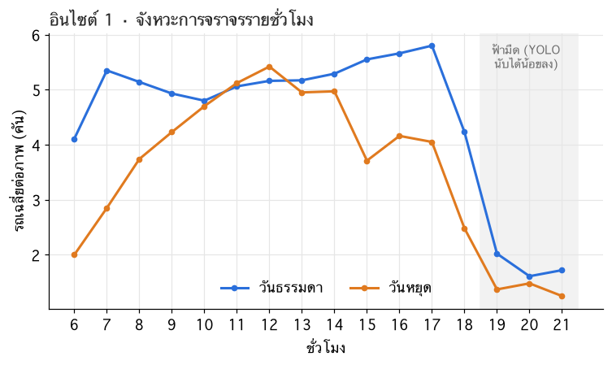
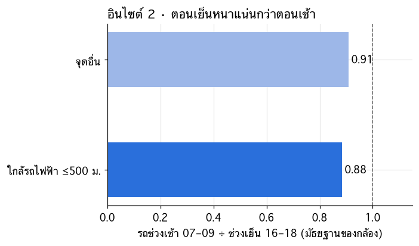
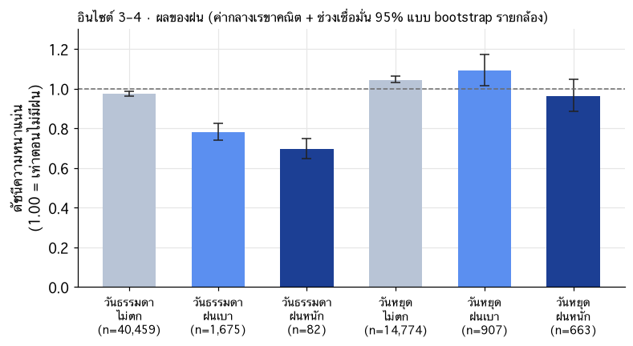
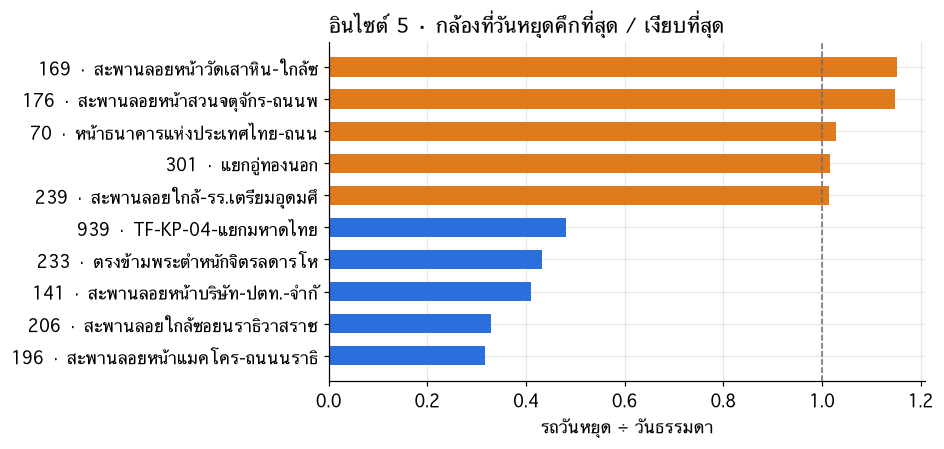
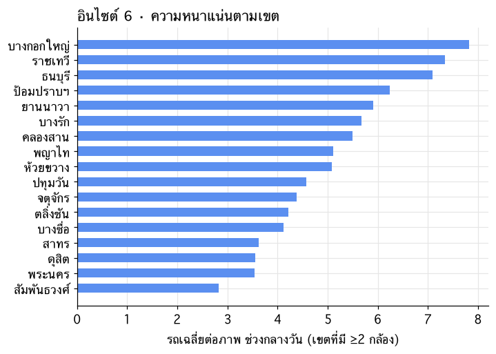
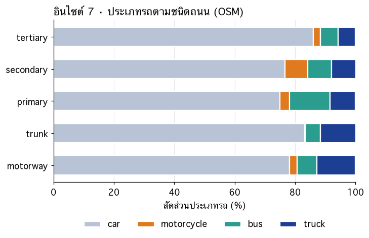
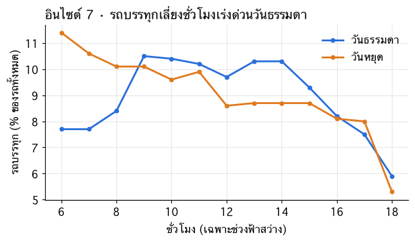
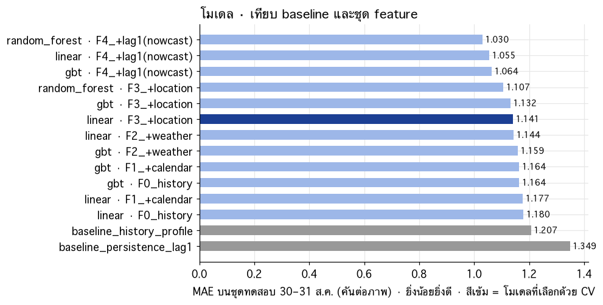
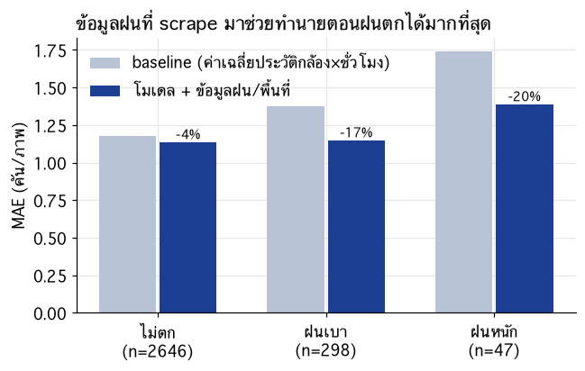
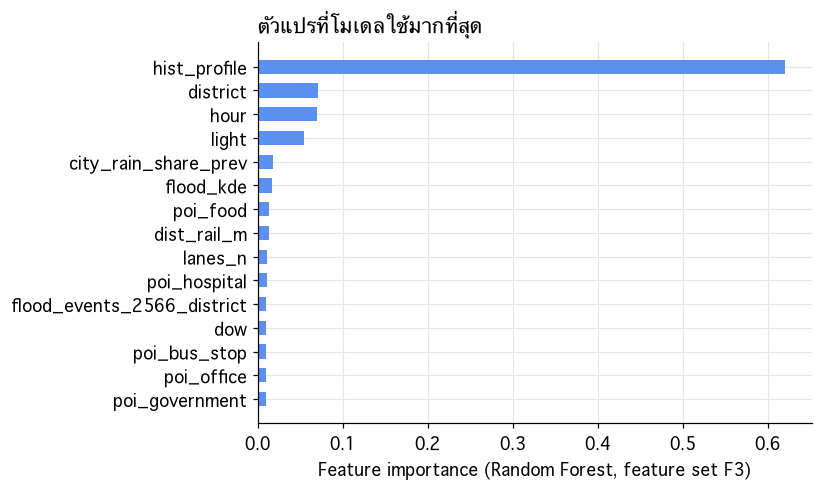

ฝนตกกับรถติดในกรุงเทพฯ · 7 อินไซต์
CCTV 100 กล้อง · 25–31 ส.ค. 2569 · ทุกตัวเลขสร้างจาก reports/analysis.json และ reports/model_report.json (คำนวณจาก Gold layer)
1. วันธรรมดามีสองยอด (เช้า–เย็น) · วันหยุดมียอดเดียวตอนเที่ยง
Contextคนเมืองเดินทางตามตารางงาน/เรียน วันหยุดไม่มีแรงบังคับนี้
Insightวันธรรมดายอดแรก 07:00 (5.35 คัน/ภาพ) และยอดที่สูงกว่า 17:00 (5.80) · วันหยุดยอดเดียว 12:00 (5.42) และรถน้อยกว่าวันธรรมดา 20% ในช่วงฟ้าสว่าง
Evidenceรูปแบบรายชั่วโมงของ อ.–ศ. คล้ายกัน (สหสัมพันธ์ 0.35–0.78) แต่จันทร์ 31 ส.ค. ต่างออกไป (-0.19–0.36) เพราะฝนตกช่วงบ่าย · ปฏิทินวันหยุดยืนยันว่าสัปดาห์นี้ไม่มีวันหยุดราชการ (ทุกวันจันทร์–ศุกร์เป็นวันทำงานปกติ)
Actionตั้งเวลาเพิ่มเจ้าหน้าที่จราจร/สัญญาณไฟแยกตามประเภทวัน: วันธรรมดาเน้น 07:00 และ 16:00–18:00 วันหยุดเน้น 11:00–13:00

แหล่งข้อมูล: ภาพ CCTV + YOLO · timeanddate (s5) · sunrise-sunset (s4) ใช้ตัดช่วงหลัง 18:30 ที่ฟ้ามืดออกจากการเทียบ
2. ตอนเย็นหนาแน่นกว่าตอนเช้า
Contextขาเย็นมีทั้งกลับบ้านและธุระอื่นปนกัน ขาเช้ามีเป้าหมายเดียวแต่เวลาออกจากบ้านกระจายกว่า
Insight50 กล้องมีรถช่วง 16–18 น. มากกว่าช่วง 07–09 น. เกิน 10% เทียบกับ 23 กล้องที่กลับกัน · ชั่วโมงที่เป็นยอดของกล้องมากที่สุดคือ 17:00 (18 กล้อง)
Evidenceถนนรอง (tertiary) เอียงไปทางเย็นมากที่สุด (เช้า/เย็น 0.57) ส่วนถนนหลัก 0.92 · สมมติฐานว่ากล้องใกล้สถานีรถไฟฟ้า (≤500 ม., OSM) จะเช้าเบากว่า ไม่ได้รับการยืนยัน: 0.88 vs 0.91, p = 0.97
Actionงานถนน/ปิดช่องจราจรควรเลี่ยง 16:00–18:00 มากกว่าช่วงเช้า

แหล่งข้อมูล: ภาพ CCTV + YOLO · OpenStreetMap (s6) ชนิดถนนและสถานีรถไฟฟ้า · sunrise-sunset (s4)
3. ฝนตกวันธรรมดา กล้องเห็นรถน้อยลง 15–30%
Contextฝนทำให้คนเลื่อนการเดินทาง และรถที่วิ่งอยู่ช้าลง/เว้นระยะมากขึ้น
Insightดัชนีความหนาแน่น (1.00 = เท่าตอนไม่ฝนของกล้อง×ชั่วโมงเดียวกัน) ฝนเบา 0.78 (95% CI 0.74–0.82) · ฝนหนัก 0.70 (95% CI 0.65–0.75) · เฉพาะตอนฟ้าสว่างยังลดลง: ฝนเบา 0.86 (95% CI 0.81–0.92) จึงไม่ได้เกิดจากความมืดอย่างเดียว
EvidenceMixed-effects model (สุ่มตามกล้อง คุมชั่วโมงและแสง): ฝนเบา -16%, ฝนหนัก -21% (p < 0.001) · METAR สนามบินรายงานฝน 36 ชม. ตรงกับชั่วโมงที่สถานี กทม. วัดฝนได้ ≥10% ของเมือง 17 ชม. · ถ้าใช้ Open-Meteo แทนสถานีจริง จะนับว่าฝนตก 20,116 ภาพ (สถานีจริง 4,599) และผลของฝนหายไป (0.94) → ต้องใช้ข้อมูลสถานีที่ scrape มา
Actionเมื่อเรดาร์/สถานีบอกว่าฝนกำลังเข้า ให้เตรียมแผนจราจรช่วงเย็นวันธรรมดา และแจ้งเตือนผู้ขับขี่ล่วงหน้า

แหล่งข้อมูล: ภาพ CCTV + YOLO · สถานีวัดฝน กทม. (s1) · METAR (s2) · Open-Meteo (s3) · sunrise-sunset (s4)
4. ฝนวันหยุดแทบไม่เปลี่ยนจำนวนรถ และไม่พบน้ำท่วมถนนรอบกล้อง
Contextวันหยุดคนเลือกเวลาเดินทางได้ และไม่ต้องรีบไปทำงาน
Insightวันหยุด: ไม่ตก 1.04 (95% CI 1.03–1.06) · ฝนเบา 1.09 (95% CI 1.01–1.17) · ฝนหนัก 0.96 (95% CI 0.89–1.05) → ไม่ต่างจากตอนไม่ฝนอย่างมีนัยสำคัญ · ใน mixed model ผลของฝนเบาวันหยุดต่างจากวันธรรมดา +23% (p < 0.001)
Evidenceสถานีวัดน้ำท่วมถนน กทม. ภายใน 1 กม. ของ 75 กล้อง วัดได้ 0 ครั้งที่ระดับ > 0 ซม. ตลอดสัปดาห์ · กล้องที่มีจุดเสี่ยงน้ำท่วม 'ยังไม่แก้ไข' ใน 500 ม. (21 กล้อง) ไม่ได้ลดลงตอนฝนมากกว่า (p = 0.20) · DBSCAN พบ hotspot 26 กลุ่ม แต่มีกล้องอยู่ในนั้นแค่ 2 ตัว · ความหนาแน่น KDE ไม่สัมพันธ์ (ρ = 0.04)
Actionสัปดาห์นี้ฝนไม่แรงพอให้น้ำท่วมถนน ผลของฝนจึงมาจากพฤติกรรมคน ไม่ใช่ถนนใช้ไม่ได้ · ควรเก็บข้อมูลช่วงพายุใหญ่เพิ่มเพื่อทดสอบจุดเสี่ยงอีกครั้ง
แหล่งข้อมูล: สถานีวัดน้ำท่วมถนน กทม. (s8) · BMA Open Data จุดเสี่ยงน้ำท่วม 737 จุด + ปี 2568 + สถิติ 2566 (s9) · GeoPandas buffer/sjoin, KDE, DBSCAN
5. วันหยุดคึกหรือเงียบ ขึ้นกับว่าแถวนั้นเป็นย่านทำงานหรือย่านพักผ่อน
Contextย่านสำนักงานคนหายไปวันหยุด ส่วนสวนสาธารณะ/วัด/ตลาดคนมามากขึ้น
Insightค่ากลางวันหยุด÷วันธรรมดา = 0.79 · คึกขึ้น: กล้อง 169 หน้าวัดเสาหิน (1.15), 176 หน้าสวนจตุจักร (1.15) · เงียบที่สุด: ถนนนราธิวาสฯ กล้อง 196 (0.32) และ 206 (0.33), หน้า ปตท. วิภาวดี 141 (0.41)
Evidenceจำนวนสถานีรถไฟฟ้ารอบกล้อง (OSM 300 ม.) สัมพันธ์กับวันหยุดที่คึกกว่า (ρ = 0.25, p = 0.011) · จำนวนห้าง/ตลาด/สำนักงานไม่สัมพันธ์ (|ρ| ≤ 0.13) แปลว่าสถานที่สำคัญเฉพาะจุดสำคัญกว่าจำนวนสถานที่
Actionวันหยุดลดรอบสัญญาณไฟ/เจ้าหน้าที่ในย่านธุรกิจ (สาทร–นราธิวาส, วิภาวดี) และย้ายไปจุดสวน/วัด/ตลาดนัด

แหล่งข้อมูล: ภาพ CCTV + YOLO · OpenStreetMap (s6) สถานที่ 9 ประเภทรอบกล้อง · timeanddate (s5)
6. ฝั่งธนฯ–ราชเทวีหนาแน่นสุด · พระนคร/ดุสิตน้อยสุด · เย็นวันศุกร์หนักสุด
Contextกล้องในเขตเมืองเก่าอยู่บนถนนเล็กกว่าและมีข้อจำกัดการจราจร
Insightช่วงฟ้าสว่าง: บางกอกใหญ่ 7.8, ราชเทวี 7.3, ธนบุรี 7.1 คัน/ภาพ · น้อยสุด สัมพันธวงศ์ 2.8, พระนคร 3.5, ดุสิต 3.5 · เย็นวันธรรมดา 16–18 น.: ศุกร์ 6.28 vs อ.–พฤ. 5.52–5.73 (จันทร์ 4.95 ฝนตก)
Evidenceค่ากลางตามชนิดถนน (OSM): motorway 5.7 > primary 4.2 > secondary 3.8 > tertiary 2.5 · แต่ยังไม่มีนัยสำคัญ (Kruskal–Wallis p = 0.56) เพราะมุมกล้องต่างกันมาก
Actionบ่ายวันศุกร์ควรเปิดช่องพิเศษ/ขยายรอบไฟเขียวก่อนวันอื่น · ใช้ตัวเลขรายเขตจัดลำดับการลงทุน

แหล่งข้อมูล: ภาพ CCTV + YOLO · ตารางกล้อง (พิกัด) + สถานีฝน กทม. (เขต) · OpenStreetMap (s6)
7. ประเภทรถต่างกันตามถนนและย่าน · รถบรรทุกเลี่ยงชั่วโมงเร่งด่วน
Contextข้อบังคับเวลาห้ามรถบรรทุกเข้าเมือง และย่านร้านอาหาร/สำนักงานมีมอเตอร์ไซค์ส่งของมาก
Insightรถบรรทุกสูงสุดบน motorway (12.8%) · รถบัสบน primary (13.4%) · มอเตอร์ไซค์บน secondary (7.4%) · วันธรรมดารถบรรทุก 7.7% ตอน 07:00 และ 7.5% ตอน 17:00 เทียบกับ 10.4% ตอน 10:00
Evidenceสัดส่วนมอเตอร์ไซค์สัมพันธ์กับจำนวนร้านอาหารรอบกล้อง (ρ = 0.21, p = 0.032) สูงสุดที่ BR-05-01-แยกสีลม-นราธิวาส 35% (ร้านอาหาร 72 แห่ง สำนักงาน 26 แห่ง ใน 300 ม.)
Actionจุดที่มอเตอร์ไซค์หนาแน่นควรมีที่จอดรับส่งอาหาร · ตรวจการบังคับใช้เวลาห้ามรถบรรทุกบนทางด่วนช่วงเร่งด่วน


แหล่งข้อมูล: ภาพ CCTV + YOLO (แยก 4 ประเภท) · OpenStreetMap (s6) · sunrise-sunset (s4)
โมเดลทำนาย (Spark ML)
โจทย์ทำนายรถเฉลี่ยต่อภาพของแต่ละกล้องในแต่ละชั่วโมง เทรน 25–29 ส.ค. ทดสอบ 30–31 ส.ค. (แบ่งตามเวลา) จูนด้วย forward-chaining 2 รอบ
ผลbaseline (ค่าเฉลี่ยประวัติกล้อง×ชั่วโมง×ประเภทวัน) MAE 1.207 · โมเดลที่เลือกด้วย CV: linear F3_+location MAE 1.141, R² 0.748 · Random Forest F3 MAE 1.107 · ถ้ารู้จำนวนรถชั่วโมงก่อนหน้า (nowcast) MAE 1.030, R² 0.802
ฝนช่วยไหมในชั่วโมงที่ฝนเบา MAE ลดจาก 1.38 เหลือ 1.15 (-17%) · ฝนหนัก 1.74 → 1.39 (-20%) · ตัวแปรฝนที่สำคัญที่สุดคือ สัดส่วนสถานีทั่วเมืองที่ฝนตกในชั่วโมงก่อน (ถ้าตกทั้งเมือง โมเดลคาดว่ารถลด 20%)
ข้อจำกัดทำนายกล้องที่ไม่เคยเห็นไม่ได้ (R² 0.08; เพิ่มข้อมูลพื้นที่จาก OSM แล้วแย่ลงเป็น -0.71) → ระดับรถของแต่ละกล้องขึ้นกับมุมกล้องมากกว่าลักษณะพื้นที่



ข้อจำกัด
ข้อมูล 7 วัน · ไม่มีฝนช่วงเช้า · ภาพหาย 27 ส.ค. 06–09 น. · YOLO สำเร็จรูปนับได้น้อยลงตอนมืดและนับมอเตอร์ไซค์ขาด (ต้องยืนยันด้วยการนับมือ 200 ภาพ: reports/label_tool.html) · สถานีฝนอยู่ห่างกล้องเฉลี่ย 847 ม. · เว็บ กทม. แสดงแค่ 51 สถานีที่ฝนมากสุดต่อชั่วโมง (สถานีที่ไม่แสดงถูกแทนเป็น 0 เมื่อแถวสุดท้ายเป็น 0) · ผลเป็นความสัมพันธ์ ไม่ใช่เหตุและผล